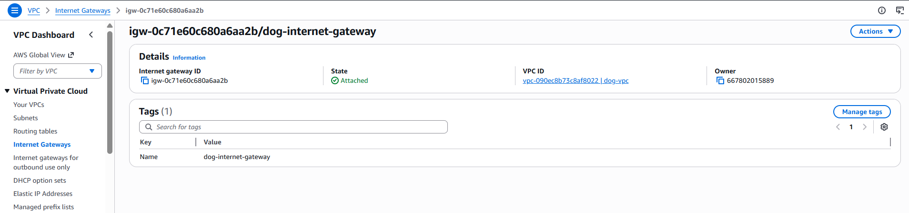
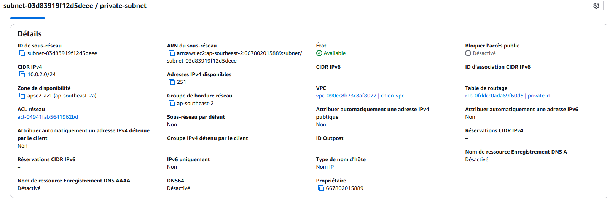
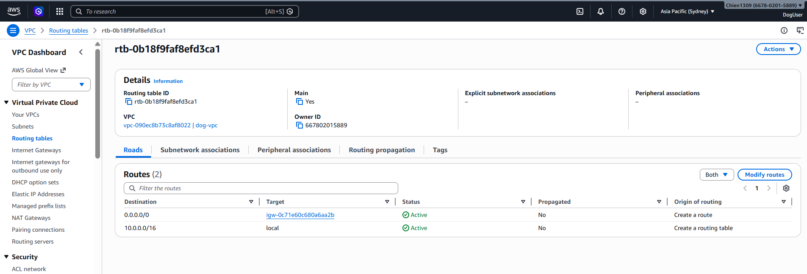

Created IAM AdminGroup and assigned AdministratorAccess. Created IAM user and added to group. Logged in successfully using IAM user.

Launched an EC2 instance using Amazon Linux. Configured security group to allow SSH and HTTP access. Connected to the instance via SSH and installed Apache web server. Successfully deployed a simple web page.


Created a custom VPC with CIDR block 10.0.0.0/16.
Created two subnets:
+ Public subnet (10.0.1.0/24)
+ Private subnet (10.0.2.0/24)
Created and attached an Internet Gateway (IGW).
Configured route tables:
+ Public route: 0.0.0.0/0 → Internet Gateway
+ Private route: local only (no internet access)
Enabled auto-assign public IPv4 for public subnet.
Created an S3 bucket and uploaded index.html.
Disabled block public access and added bucket policy.
Enabled static website hosting.
Successfully accessed the website via S3 endpoint.




